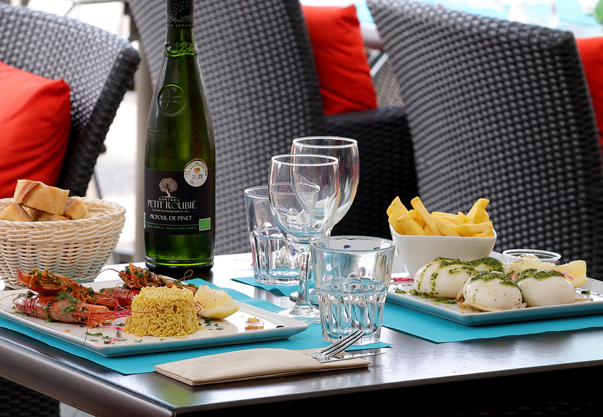
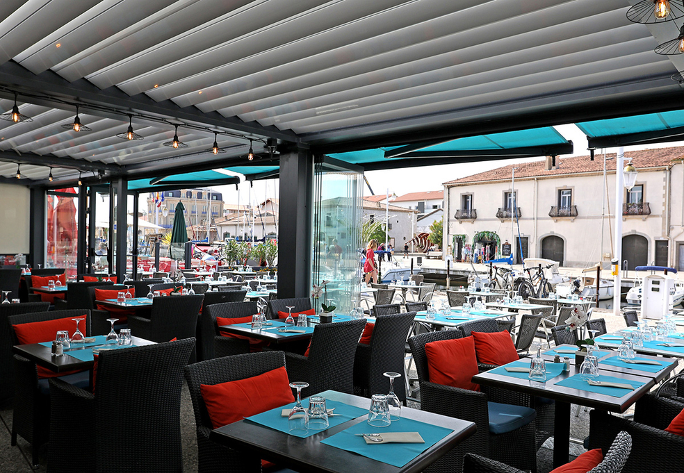
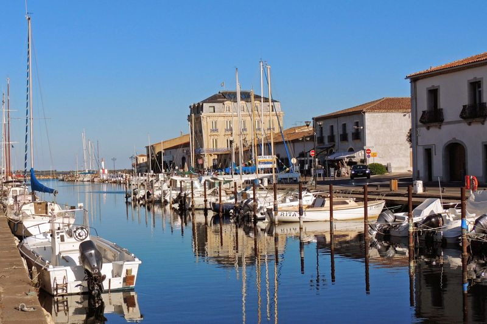
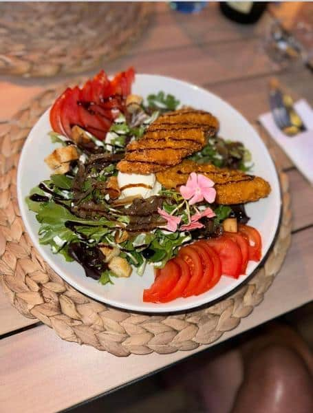
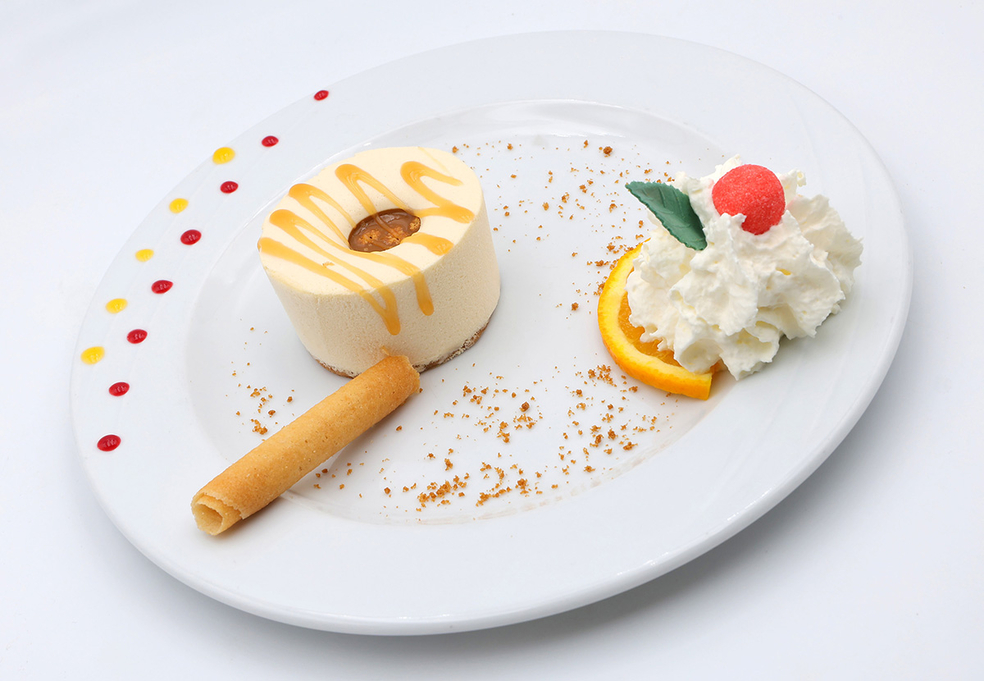

Brasserie · Port de Marseillan
34 Quai Antonin Gros · Marseillan · Hérault

Notre histoire
Idéalement située sur le quai Antonin Gros, face à l'étang de Thau, O'Soleil invite à une pause gourmande dans un cadre unique. La terrasse ouverte sur le port, l'air iodé et la lumière méditerranéenne créent une atmosphère que l'on ne quitte pas sans regret.
Notre cuisine est franche et sincère — des plats simples, soignés, savoureux. Des produits locaux travaillés avec soin, des cocktails maison et des desserts généreux dont on parle encore le soir.
Ce qui nous distingue
Chaque détail est pensé pour que votre moment chez nous soit mémorable — du premier verre au dernier dessert.
Profitez d'une vue dégagée sur les bateaux et l'étang de Thau depuis notre grande terrasse ensoleillée, ouverte aux beaux jours.
Des plats simples mais parfaitement exécutés, élaborés à partir de produits frais et locaux — une cuisine honnête qui régale.
Une carte de cocktails maison élaborés avec soin, des classiques revisités aux créations inspirées par les saveurs du Midi.
Une équipe chaleureuse qui prend le temps. Ici, on ne se sent jamais pressé — prenez votre temps, c'est ça, le Sud.
Une carte inclusive avec de belles options végétariennes, pensées avec autant de soin que le reste de nos propositions.
Marseillan village, son port pittoresque, ses ruelles ombragées. O'Soleil est au cœur d'un des plus beaux villages de l'Hérault.
L'atmosphère

La terrasse
Le port
La cuisine
Les dessertsCe qu'ils en disent
"L'endroit est agréable, sur le port de Marseillan village. Les plats sont simples mais très bien préparés et goûteux. Gardez une place pour le dessert, le baba au rhum est remarquable."
"Excellente adresse sur le port. Les cocktails sont originaux et très réussis. La terrasse offre une vue magnifique sur les bateaux. Service rapide et sympathique."
"Bonne brasserie de port avec une belle terrasse. Les moules étaient fraîches et bien préparées. Prix raisonnables pour la qualité. On y reviendra !"
"Un coup de cœur ! La terrasse sur le port est idéale pour un repas en amoureux ou entre amis. Cuisine généreuse, service attentionné. Le tiramisu maison est à tomber."
"Super endroit ! Cadre magnifique sur le port de Marseillan. La daurade grillée était parfaite — cuite à la seconde. Les prix sont très honnêtes pour la qualité proposée."
Nous trouver
Horaires d'ouverture